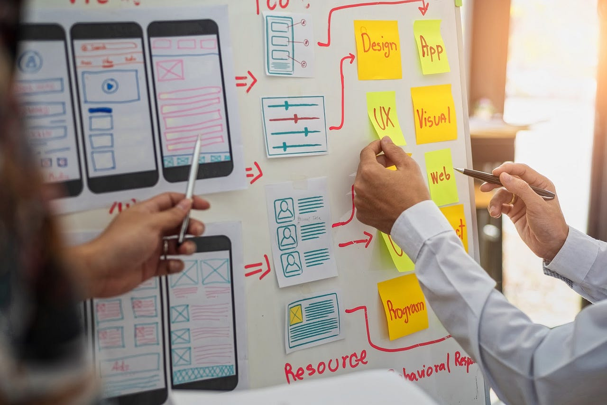

UX Lead Designer
UX
Design
Leadership
Who we need:
- Someone with a deep passion for user experience and a proven track record of leading design teams
- A creative thinker who can mentor and inspire junior designers to grow
- An experienced designer comfortable with modern design tools and design systems
- A strategic problem-solver who conducts thorough user research and validates design decisions
Overview:
We're looking for someone to lead our design vision and help shape how our users interact with our products. You'll manage the entire design process—from understanding user needs through research to building prototypes and final designs. You'll work alongside product teams and developers to bring your work to life.
If you're passionate about solving user problems and bringing out the best in junior designers, this role is for you.
Technical Skills:
- Proficiency with Figma, Adobe XD, Sketch, or similar tools
- Strong understanding of UX research methods and usability testing
- Ability to create wireframes, prototypes, and high‑fidelity UI designs
- Knowledge of accessibility standards and responsive design
- Understanding of basic HTML/CSS to communicate effectively with developers
Qualifications:
- Previous experience in a senior or lead UX/UI design role
- Strong portfolio showcasing user‑centered design work
- Excellent communication and presentation skills
- Ability to manage multiple projects and lead design direction